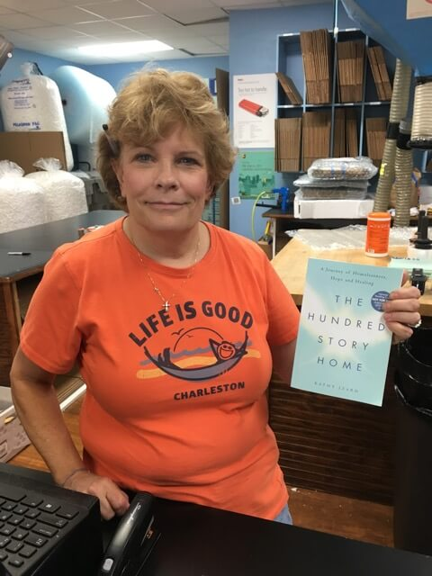
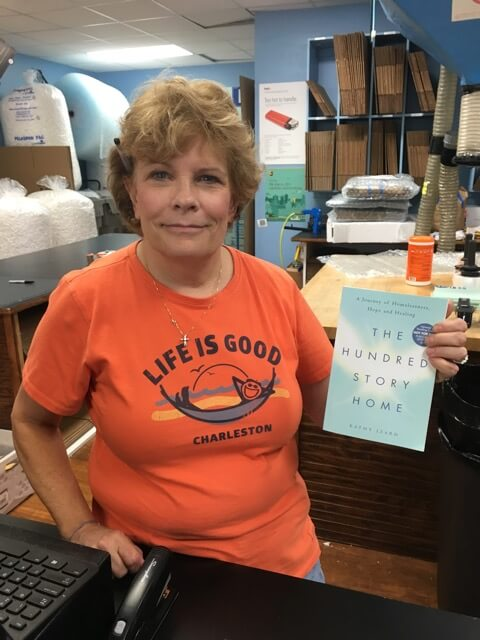

"Instructions for living a life: Pay Attention. Be astonished. Tell about it."
--Mary Oliver
Dear Readers,
In 2010, after an astonishing three years of helping house those experiencing homelessness in Charlotte, I decided to try to heed Mary Oliver's advice and tell about it. I loved to write but had not written anything longer than an email in decades so it took six years, three writing courses, two editors and two therapists to craft The Hundred Story Home. While I was writing through 2014 and 2015, I tried to interest literary agents and publishers, but received no offers. So in October 2016, I completed the promise to myself and self-published The Hundred Story Home. As part of the launch, I worked with Corri Smith at Black Wednesday Social to help me with social media. Corri had the great idea to put 100 copies in The Little Free Libraries in ten cities to spread the book outside of my home in Charlotte, NC. We did and waited to see what happened.
At first, it took a little while to catch on. The books were placed all over Charlotte and in cities like Birmingham, Charleston, and Nashville but there wasn't a rush to get them. Slowly, people found them and followed the message in the books to post selfies of the book they found. Then people were reading it and sharing it with friends in other cities. One day, I went to my local package store and learned the owner, Debbie Starnes, had sent the book to her family in Ohio. And then this from Rachel Estes, Director of Outreach and Missions at Canterbury United Methodist Church. I had never met Rachel in Birmingham, Alabama but she had responded to our request to share the book in the Little Free Library in her yard:
"There are the books that I mention off hand to folks as a good read. There are the books that I intentionally email, text or nudge someone to read. There are the rare books that I hand people copies of and say ‘You should read this.’ And then there are the books that after you confetti-share them across the community as fast and furiously as possible because you can't explain how deeply it moved you...that cause people to come up for the next few MONTHS to say, ‘that was truly one of the best books I've read.’ The Hundred Story Home is that book. The book that you can't mention off hand...that you can't just hope someone reads...it's the book that deserves to be pressed into someone's hands with a promise to have tea and bacon jam and talk about it. The Hundred Story Home is a book that just begins to engage a few of your own stories and then...you'll be pressing it into someone's hands..."
Rachel's email to me was the beginning of a new chapter of this book where it was shared in book groups and women's groups and houses of faith. Where it began a life I never expected. Pastor Mike Stone in Hickory, NC was the first to invite me to speak after his church did an "all-church read" of The Hundred Story Home. Soon others asked for me to come to Virginia, Atlanta, Raleigh and Greensboro. I started to realize the themes in my book-homelessness, mental health, social justice and call to action-were powerful messages for not only individual readers but for groups to discuss together. It made me wish I had a publisher who could help me spread that message.
In April 2016, I met with a local literary agent Sally McMillan to ask if that was possible. If a self-published book was finding its way, thousands of copies later, to cities all over the South and East coast, would a publisher now be interested? Two months later, Daisy Hutton with Harper Collins Christian Publishing said, "Yes."
I could not be prouder or more amazed to be working with Harper Collins. The little blue book many of you know as The Hundred Story Home officially "retired" in December 2017 to make way for a new edition to be released in paperback and eBook June 2018. (Yes, you can finally get my book on a Kindle!) The Harper Collins team has worked with me to provide great edits to the original book, some new content and exciting additions like a reader's guide for groups. Best of all there will be photos so you can "see" everything from the stories of building Moore Place and meeting Denver Moore.
Thank you to all of you who read and shared The Hundred Story Home! Your grass-roots support of this book is what has made this new version possible. I hope the book continues to spread across the country friend to friend spreading the hope to believe in ourselves and in something bigger.
With thanks,
Kathy
 
